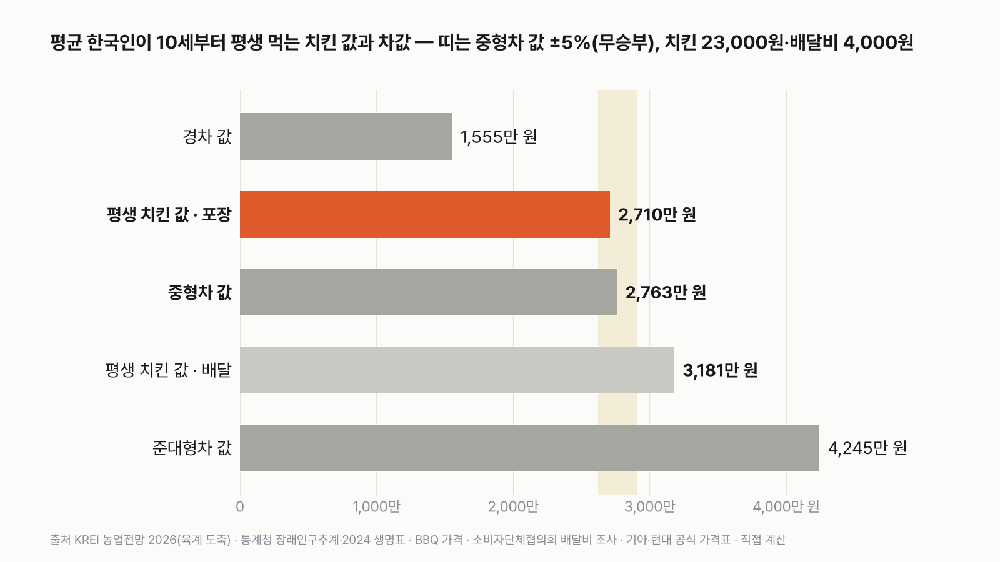
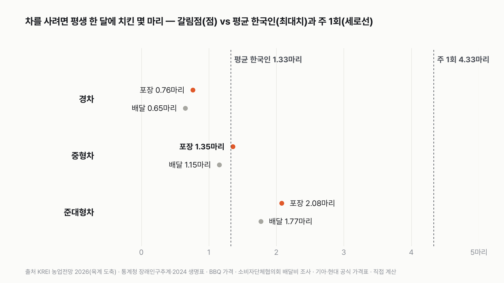
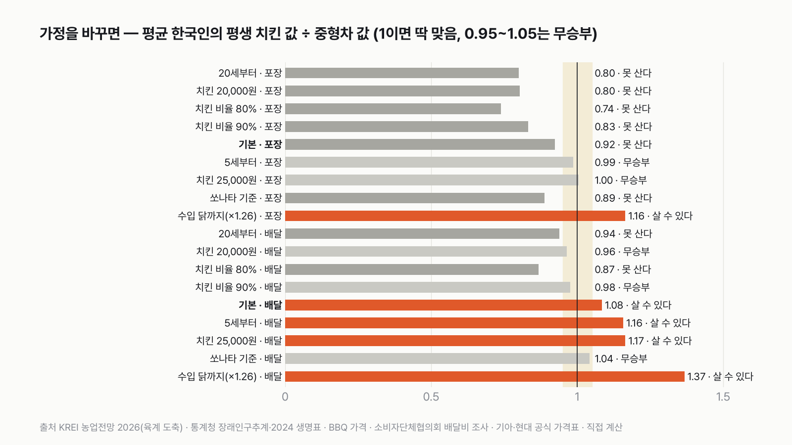
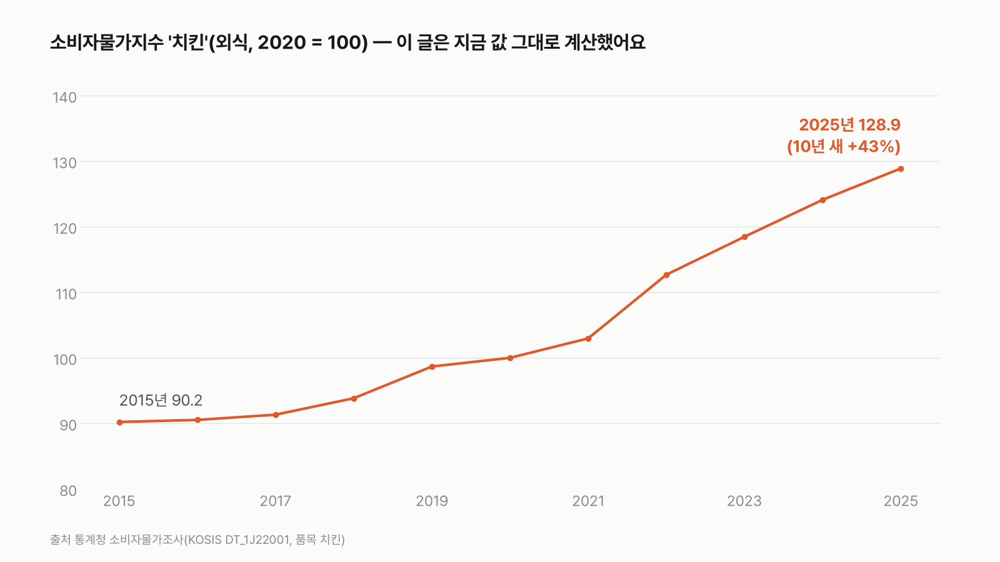

한국인이 평생 먹는 치킨 값이면, 중형차를 살 수 있을까
결과를 보기 전에 먼저 골라 주세요. 투표하면 독자 예상과 데이터 결과를 나란히 보여 드려요.
독자 투표
- 한국인이 평생 먹는 치킨을 돈으로 바꾸면 얼마일까요? 그 돈으로 중형차 한 대를 살 수 있을까요?
- 닭 도축 마릿수(한국농촌경제연구원), 인구와 기대수명(통계청), 치킨 값, 차값(제조사 공식 가격표)으로 계산했어요.
- 평균 한국인의 평생 치킨 값과 중형차 값을 겨루고, 판정이 바뀌는 조건도 찾았어요. 투표하면 결과가 바로 아래에 열려요.
조건과 규칙
- 치킨 한 마리는 23,000원이에요. 대형 브랜드의 한 마리 메뉴 값이고, 평생 이 값 그대로라고 봐요.
- 평균 한국인이 1년에 먹는 치킨은 국내에서 잡은 닭 수를 10세 이상 인구로 나눠 정해요. 10세부터 기대수명까지 먹어요.
- 중형차는 국산 중형 세단의 가장 싼 모델(2,763만 원)이에요. 포장으로 사 먹는 값을 기준으로, 평생 치킨 값이 차값보다 5% 넘게 많으면 '살 수 있다', 5% 넘게 적으면 '못 산다', 그 사이면 무승부예요.
- 배달비, 치킨 값, 먹기 시작한 나이를 바꾸면 판정이 어떻게 되는지도 함께 봐요.
결과 요약
- 평균 한국인의 평생 치킨 값은 거의 딱 중형차 한 대예요. 2,710만 원으로 중형차 값의 0.98배, 판정은 무승부예요.
- 국내에서 잡은 닭 전부를 치킨으로 친 최대치예요. 갈림점은 한 달 1.35마리인데, 평균 한국인은 1.33마리로 바로 아래에 있어요.
- 배달로 시키거나(1.15배) 한 마리 25,000원짜리를 먹으면(1.07배) 살 수 있어요. 일주일에 한 마리면 중형차 3.2대 값이에요.
그래서? 한 달 1.35마리, 당신은 넘나요? 넘으면 평생 치킨 값으로 중형차 한 대예요.
독자 예상 vs 데이터 결과
한국인이 평생 먹는 치킨 값이면, 중형차를 살 수 있을까?
데이터 결과: 무승부. 평생 치킨 값이 중형차 값의 0.98배라 무승부예요. 한 달 1.35마리면 차값과 같아지고, 1.42마리를 넘으면 살 수 있어요.


| 누가, 어떻게 | 평생 치킨 | 평생 치킨 값 | 중형차와 비교 | 판정 |
|---|---|---|---|---|
| 평균 한국인 · 포장(판정 기준) | 1,178마리 | 2,710만 원 | 0.98배 | 무승부 |
| 평균 한국인 · 배달 | 1,178마리 | 3,181만 원 | 1.15배 | 살 수 있다 |
| 평균 한국인 · 한 마리 25,000원 | 1,178마리 | 2,945만 원 | 1.07배 | 살 수 있다 |
| 평균 한국인 · 20세부터 | 1,021마리 | 2,348만 원 | 0.85배 | 못 산다 |
| 주 1회 · 포장(혼자 한 마리) | 3,846마리 | 8,847만 원 | 3.20배 | 살 수 있다 |
이 규칙과 가정이면 평균 한국인의 평생 치킨 값은 중형차 한 대와 비겨요. 2,710만 원과 2,763만 원, 차이는 53만 원이에요. 치킨으로 치면 23마리, 평생 1,178마리 가운데 2%예요.
평균 한국인 포장: 무승부(0.98배)
2025년 국내에서 잡은 닭(고기용으로 키운 육계)은 7억 7,565만 마리예요. 이걸 10세 이상 인구 4,870만 명으로 나누면 한 사람에 1년 15.9마리, 한 달 1.33마리예요. 10세 아이는 앞으로 평균 74년을 더 살아요. 그동안 1,178마리를 먹고, 23,000원씩 2,710만 원이에요. 중형차 값의 98%라 무승부 띠(95~105%) 안에 들어요.
이 숫자는 닭 전부가 치킨이 된다고 친 최대치예요. 닭은 닭볶음탕, 백숙, 급식, 가공식품에도 쓰여요. 닭의 3% 남짓만 다른 곳으로 가도 0.95배 아래로 내려가 '못 산다'가 돼요. 반대로 수입 닭은 빼고 셌어요. 두 방향 모두 공식 숫자가 없어서, 판정은 무승부로 두었어요.


갈림점은 한 달 1.35마리
평생 꾸준히 한 달에 1.35마리를 포장으로 먹으면 딱 중형차 값이에요. 평균 한국인(1.33마리)은 그 바로 아래에 있어요. 두 점이 거의 겹쳐서, 처음 그래프를 그렸을 때 저도 눈을 의심했어요. 넉 달에 5~6마리, 한 달에 한 번 시키고 가끔 한 번 더 시키면 넘는 선이에요.
차마다 갈림점이 달라요. 경차(1,555만 원)는 한 달 0.76마리, 준대형차(4,245만 원)는 2.08마리예요. 평균 한국인은 경차 값의 1.74배라 경차는 넉넉히 사고, 준대형차는 0.64배라 못 사요.
배달로 시키면: 살 수 있다(1.15배)
같은 1,178마리를 모두 배달로 시키면 한 마리에 배달비 4,000원씩, 평생 471만 원이 붙어요. 합치면 3,181만 원이라 중형차를 사고도 418만 원이 남아요. 배달비가 판정을 이렇게 흔들 줄은 몰랐어요. 배달비를 3,000원으로 낮춰도 1.11배라 판정은 같아요. 배달로는 갈림점이 한 달 1.15마리로 내려가요.


치킨 값을 바꾸면: 25,000원이면 살 수 있다(1.07배)
한 마리 값을 25,000원으로 잡으면 평생 2,945만 원, 1.07배라 살 수 있어요. 요즘 배달앱 값이나 인기 메뉴 값이에요. 반대로 동네 치킨처럼 한 마리 2만 원이면 2,356만 원, 0.85배라 못 사요. 치킨 한 마리 값 2,000원 차이가 판정을 무승부에서 '살 수 있다'로 옮겨요.
먹기 시작한 나이를 바꾸면: 20세부터면 못 산다(0.85배)
20세부터 세면 먹는 기간이 64년으로 줄어 1,021마리, 0.85배예요. 반대로 5세부터 세면 1.05배로 무승부 띠의 위쪽 끝에 걸려요. 같은 차라도 쏘나타(2,876만 원)를 기준으로 하면 0.94배로 '못 산다'가 돼요. 평생 치킨 값과 중형차 값이 거의 같아서, 작은 가정 하나에도 판정이 움직여요.
주 1회면 판정이 완전히 뒤집혀요
일주일에 한 마리를 혼자 다 먹는 사람은 1년 52마리, 평생 3,846마리예요. 포장만으로 8,847만 원, 중형차 값의 3.2배예요. 준대형차도 2.1배라 두 대를 살 수 있어요. 둘이 한 마리를 나눠 먹어도 1.60배예요. 평균 한국인은 닭 수를 인구로 나눈 값이라 나눠 먹는 게 이미 들어 있어요.


치킨 값은 10년 새 43% 올랐어요
통계청 소비자물가지수의 '치킨' 품목은 2015년 90.2에서 2025년 128.9가 됐어요. 이 글은 치킨 값과 차값을 모두 지금 값으로 맞춰 계산했어요. 둘이 오르는 속도가 다르면 판정도 조금씩 움직여요.
이 숫자는 어디서 왔나요
출처
기준일 도축 마릿수는 2025년, 인구는 2025년 추계, 생명표는 2024년, 치킨 값과 차값은 2026년 11월 8일 확인한 값이에요. 처음 조건은 2026년 11월 8일 계산하기 전에 정했고, 같은 날 두 번의 검토 뒤 계산을 고쳤어요(아래).
한국농촌경제연구원
- 육계 도축 마릿수, 닭고기 소비·생산 (농업전망 2026 5장)
2025년 육계 7억 7,565만 마리, 소비 776.8천 t·생산 616.3천 t
통계청
- 성 및 연령별 추계인구KOSIS DT_1BPA001
2025년 10세 이상 인구 48,697,765명(총인구 51,684,564명)
- 2024 생명표KOSIS DT_1B42원본 보기
10세 기대여명 73.97년, 20세·5세 기대여명
BBQ 황금올리브치킨 가격 인상 발표 보도(YTN, 2024-05-22)
- 치킨 한 마리 가격
23,000원
한국소비자단체협의회 물가감시센터
- 배달비 조사 (2022년 12월)
가장 흔한 배달비 3,000~5,000원
기아, 현대자동차
- 차값 (2026년 11월 기준 공식 가격표)
경차 기아 레이 트렌디 1,555만, 중형 기아 K5 2.0 스마트 셀렉션 2,763만, 쏘나타 2.0 프리미엄 2,876만, 준대형 현대 그랜저 2.5 프리미엄 4,245만 원
통계청
- 소비자물가지수 '치킨'KOSIS DT_1J22001원본 보기
2015~2025년 치킨 값 흐름
어떻게 셌나요
- 평균 한국인의 치킨 수: '한국인이 1년에 치킨을 몇 마리 먹나'는 공식 통계가 없어요. 그래서 2025년 국내에서 잡은 육계 7억 7,565만 마리를 10세 이상 인구 4,870만 명으로 나눴어요. 먹기 시작하는 나이(10세)와 맞추려고 10세 미만은 뺐어요. 닭 수를 인구로 나눈 값이라 나눠 먹는 것까지 들어 있어요.
- 닭 전부가 치킨이라고 친 최대치예요. 닭 가운데 몇 %가 치킨이 되는지는 공식 통계가 없어요. 무승부가 지켜지려면 96.9% 넘게 치킨이 되어야 해요.
- 수입 닭은 넣지 않았어요. 2025년 닭고기 소비는 국내 생산의 1.26배인데, 수입 닭은 대부분 냉동 부분육(다리·날개 같은 부위만 판 고기)이라 한 마리 치킨을 파는 프랜차이즈에는 잘 쓰이지 않아요. 넣으면 1.24배예요.
- 평생: 10세부터 먹기 시작해서, 2024 생명표의 10세 기대여명(앞으로 더 살 것으로 기대되는 햇수) 73.97년 동안 먹는다고 봤어요.
- 치킨 값: 한 마리 메뉴인 BBQ 황금올리브치킨 23,000원(2024년 5월 인상 발표)을 썼어요. 지금 값을 평생 그대로 썼고, 차값도 지금 값이에요.
- 배달비: 2022년 서울 조사에서 가장 흔한 배달비가 3,000~5,000원이었어요. 가운데인 4,000원을 썼어요.
- 차값: 제조사 공식 판매가(부가세 포함)에서 각 차의 가장 싼 사양을 골랐어요. 수입차는 공식 가격표를 열지 못해 뺐어요.
- 주 1회는 일주일에 한 마리를 혼자 다 먹는 사람이에요.
한계 5가지
이 데이터로 말할 수 없는 것
- 한국인이 치킨을 얼마나 자주 먹는지, 닭 중 몇 %가 치킨이 되는지는 공식 통계가 없어요. 평균 한국인은 국내 육계 도축 마릿수로 잡은 위쪽 끝이에요.
- 치킨 값 23,000원은 대형 브랜드 한 마리 메뉴 값이에요. 동네 치킨집이나 순살 메뉴는 값이 달라요.
- 배달비는 2022년 서울 조사라 지금, 그리고 다른 지역과 다를 수 있어요.
- 차는 가장 싼 사양의 값이에요. 취득세, 보험, 기름값은 넣지 않았어요.
- 평생 같은 빈도로 먹는다고 봤어요. 나이에 따라 먹는 양은 다를 수 있어요.
다음 대결
대결 다 보기실험맨 vs 월세
서울에 혼자 사는 20대 여성 실험맨, 작은 오피스텔 월세가 월급의 3분의 1을 넘을까?
A3분의 1 못 넘는다vsB3분의 1 넘는다
투표하러 가기
대결실험맨투표했어요실험맨 vs 결혼식
30대 신혼부부 실험맨, 둘이 석 달 번 돈으로 결혼식 하루 비용을 낼 수 있을까?
A석 달이면 낸다vsB석 달로는 모자란다
투표하러 가기
대결실험맨투표했어요실험맨 vs 집안일
30대 여성 실험맨의 1년 집안일, 돈으로 바꾸면 1년 번 돈보다 클까?
A집안일 값이 더 크다vsB번 돈이 더 크다
투표하러 가기
대결실험맨투표했어요실험맨 vs 등록금
20대 여성 실험맨이 1년 동안 영상·SNS 보는 시간, 최저시급으로 치면 대학 1년 등록금을 넘을까?
A넘는다vsB못 넘는다
투표하러 가기
대결실험맨투표했어요실험맨 vs 코알라
잠·평일·주말 세 판 승부, 실험맨과 코알라 중 누가 이길까?
A실험맨vsB코알라
투표하러 가기
대결실험맨투표했어요실험맨 vs 코끼리
실험맨(평균 한국인)이 1년 동안 먹는 음식, 코끼리는 열흘 안에 다 먹을까?
A열흘 안에 다 먹는다vsB열흘로는 모자란다
투표하러 가기
대결실험맨투표했어요실험맨 vs 젖소
평균 한국인이 1년 동안 마시는 우유, 젖소 한 마리는 하루면 짤 수 있을까?
A하루면 짠다vsB하루로는 모자란다
투표하러 가기
대결실험맨투표했어요실험맨 vs 쓰레기
실험맨(평균 한국인)이 1년 동안 버리는 생활 쓰레기, 자기 몸무게의 5배를 넘을까?
A5배 못 넘는다vsB5배 넘는다
투표하러 가기
새 글 나오면 받아 보기
피드 리더 앱에 이 사이트 주소를 한 번 넣어 두면, 새 글이 올라올 때 앱에 떠요. 가입이나 메일 주소는 필요 없어요.
받는 법 보기
- 피드 리더 앱을 하나 골라요. 새 글을 모아 보여 주는 앱이에요. 예를 들면 Feedly나 Inoreader가 있어요. 둘 다 무료고 웹·휴대폰에서 써요.
- 앱에서 '구독 추가'(+)를 누르고 아래 주소를 붙여 넣어요.
- 끝이에요. 새 글이 올라오면 앱 목록에 떠요.
https://protofu.github.io/opendata-insight/feed.xmlFeedly를 쓴다면 여기를 눌러 바로 추가할 수도 있어요.